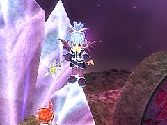
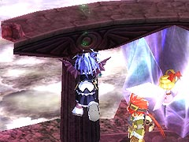

「レベルプレートG」を使い、さらに「セレブなお財布」、「サンタなおヒゲ」を装備して、第3 階層の「ちびちょうちん」のいる場所で「常闇の魔法」の奥義「ダークインパルス」を使います。周辺の敵を全て倒したら、いったん第2 階層へ行き、再び第3 階層で「ダークインパルス」を使う。これを繰り返せば10 分で100万ペンネほど稼ぐことができます。

(ちびちょうちん)
目次 > ゲームについて > 日本Falcom 攻略 > ZWEI II > 情報
らんの眼
ZWEI II (ツヴァイ 2、ZWEI II Plus)
| 概要 | 情報 | 攻略チャート |
| フード交換 | ペットについて | ボス戦 |
| 敵キャラ一覧 | ハンターランク | G-コロッセオ |
| アイテム一覧 | ガジェット一覧 | トレジャー一覧 |
| ダンジョン一覧 | クリアデータ特典 | Plusの追加要素 |
| ZWEI II攻略へ | 目次へ戻る |
| [ 1 ] [ 2 ] [ 3 ] [ 4 ] [ 5 ] [ 6 ] [ 7 ] |
| クリスタルの上に乗る |
| ルナ＝ムンドゥス にあるクリスタルには乗ることができます。暇ならば頑張って乗ってみてください。  |
| アルウェンの空中浮遊 |
| ルナ＝ムンドゥスの休憩所があるマップ(ダンジョンではない場所)で、柱とくっついた状態で、柱の方向にキーを押しながらジャンプし、空中で魔法を撃ち続けると、アルウェンが中に浮いたままになります。ただし、魔法を撃つのをやめると、下に落ちるので、「姉御のテヌグイ」を装備するといいでしょう。  |
| 後半のお金、経験値稼ぎ |
| レベル50 を目指したり、「カプセルトイ」を買い込むなどして後半お金を稼ぐ場合、星ヶ峰の吹雪ヶ原(LV.18)がおすすめです。 「レベルプレートG」を使い、さらに「セレブなお財布」、「サンタなおヒゲ」を装備して、第3 階層の「ちびちょうちん」のいる場所で「常闇の魔法」の奥義「ダークインパルス」を使います。周辺の敵を全て倒したら、いったん第2 階層へ行き、再び第3 階層で「ダークインパルス」を使う。これを繰り返せば10 分で100万ペンネほど稼ぐことができます。 (ちびちょうちん) |
| [ 1 ] [ 2 ] [ 3 ] [ 4 ] [ 5 ] [ 6 ] [ 7 ] |
| 概要 | 情報 | 攻略チャート |
| フード交換 | ペットについて | ボス戦 |
| 敵キャラ一覧 | ハンターランク | G-コロッセオ |
| アイテム一覧 | ガジェット一覧 | トレジャー一覧 |
| ダンジョン一覧 | クリアデータ特典 | Plusの追加要素 |
| ページの上部へ | ZWEI II 攻略へ | 目次へ戻る |